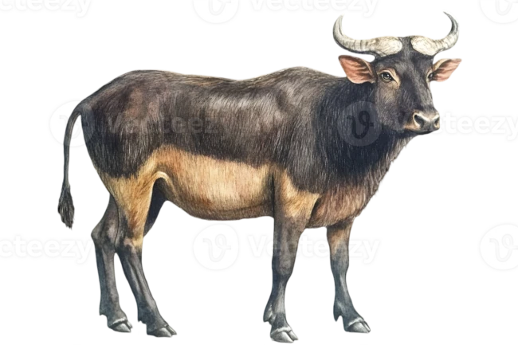

Usa-se a tag b para negrito sabendo que a tag b (não semântica).
Nesta frase tenho um termo em destaque tag strong (semântica).
Aqui estamos usando o itálico com a tag i (não semântica).
Agora usamos o itálico com a tag em (semântico).
Aqui esstamos usando a tag mark para marcador de texto.
Aqui temos outra marcação de texto.
